CROSS
Objective
Tl;dr: CROSS is a JAX library of CKKS scheme Homomorphic Encryption, which runs on Google TPUs to achieve state-of-the-art throughput, better than contemporary GPUs and FPGAs.
The core problem: billions of dollars of AI ASIC silicon sits deployed in datacenters worldwide, yet the conventional view categorizes these chips narrowly by their designed purpose—AI training and inference—leaving their broader computational potential untapped for workloads like FHE that desperately need high-throughput, energy-efficient acceleration.
CROSS addresses this problem by proving that AI ASICs can be repurposed for Homomorphic Encryption (HE), achieving state-of-the-art (SotA) throughput and energy efficiency (performance per watt) without any hardware modifications.
Background
AI is Driving New Industry Revolution
Artificial Intelligence (AI) is driving a new industrial revolution. It transforms applications from chatbots, robotics, AI coder, autonomous vehicles, biology protein discovery and AI factory, into digital tokens. In other words, the world is being digitalized and tokenized for AI Assistance.
However, such a revolution has been hindered by the "privacy concern" today. For example, real-world privacy incidents (Samsung banning ChatGPT after code leaks, Grok exposing user conversations through public search, Microsoft delaying AI Recall over on-device privacy) have made encryption a must-have requirement. This brings the central question: "How to protect the privacy of user data and models?"
Privacy Concerns Hinder AI Adoption
Today, the most advanced Large Language Models (LLMs), their training data, and analysis tools are closed-sourced. Confidential data—medical records, government documents, financial transactions—cannot be shared with cloud AI providers. This creates a trust boundary between data owners (hospitals, government agencies, enterprises) and AI service providers. Such a two-side boundary creates a gap to use the right-hand-side private model to serve the left-hand-side private data.
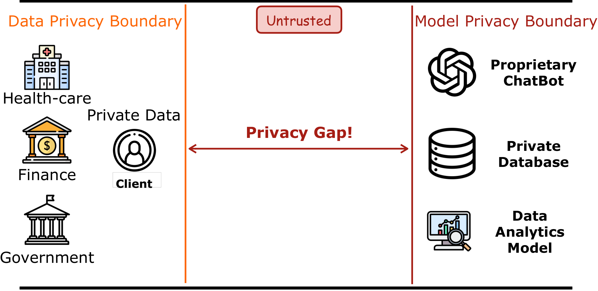
Fully Homomorphic Encryption (HE) enables encrypted computation, securing both private data of users and private model of providers. This secures privacy during the entire life cycle but becomes extremely slow.
HE bridges this gap: data owners encrypt locally, send ciphertexts (which look like random noise) to the untrusted cloud, where AI inference runs entirely on encrypted data. Only the data owner, who holds the decryption key, can recover the meaningful result. The entire pipeline never exposes raw data, and hence securing privacy during the entire life cycle—but FHE is extremely slow.
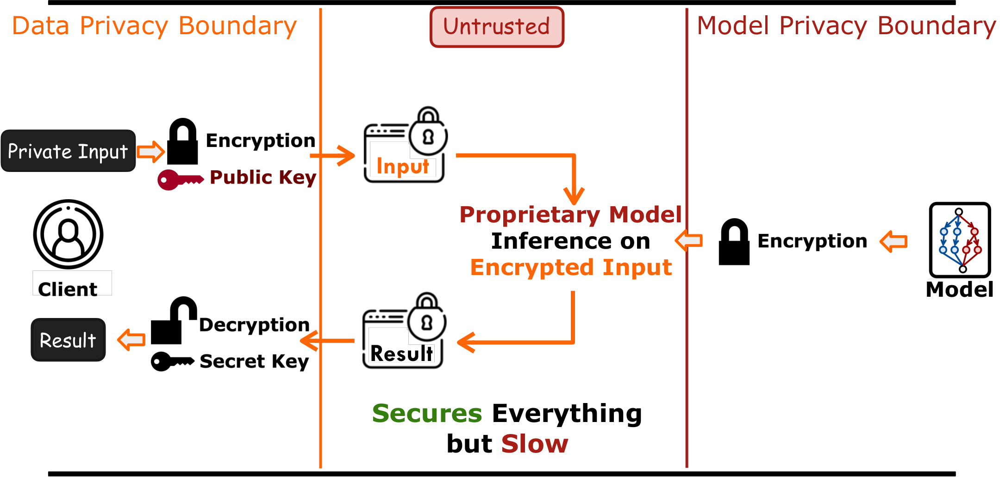
Reasons for the Slowness of FHE Performance
The slowness of HE comes with two reasons – significant memory and compute overhead. Taking ResNet18 as an example, the encryption of word-level HE schemes such as CKKS increases the memory demand four magnitudes higher and compute demand three magnitudes higher. This overhead makes it 10,000–100,000 times slower and becomes impractical.
State-of-the-art Acceleration Works Available on the Market:
To enable it to run in reasonable latency, the community is building dedicated hardware and compilers. However, building new hardware and compiler from scratch is expensive:
- CPU libraries (OpenFHE, Microsoft SEAL): Mature but limited by core count and DRAM bandwidth.
- GPU libraries (TensorFHE, cuFHE, WarpDrive, FIDESlib, FAB, HEAP, Cheddar): Leverage parallelism but 32-bit modular arithmetic maps poorly to GPU ALUs and low-precision tensor cores.
- FPGA accelerators: Customizable datapaths but lack the manufacturing scale and memory bandwidth of commodity chips.
- Custom HE ASICs (CraterLake, BTS, ARK, SHARP): Promise high performance but require multi-year design cycles, cost hundreds of millions of dollars, and none are commercially available.
Goal of CROSS:
To make HE immediately available, CROSS provides an alternative, potentially transformative way to use existing AI ASICs to accelerate HE. CROSS is a compiler framework that converts encrypted computation into native kernels accelerated by AI ASICs. This reduces years of development into immediate deployment, and saves millions of dollars in hardware fabrication costs.
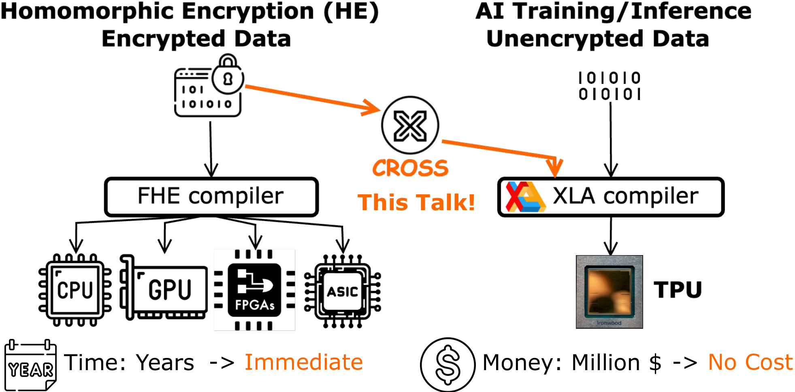
Why AI ASICs? AI ASICs, such as Google's Tensor Processing Units (TPU), deliver higher throughput and better energy efficiency (performance per watt) than other commodity devices. Across technology nodes, AI ASICs consistently sit on the best energy-efficiency frontier—enabling more chips to fit within a datacenter's power budget.
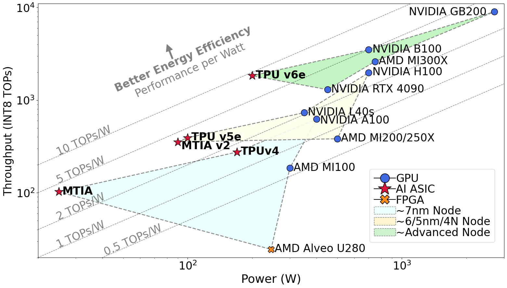
TPU Microarchitecture Overview
With such motivation, let's now see what TPU could do by deeply diving into its architecture. Overall, TPU has massive memory, compute and bandwidth.
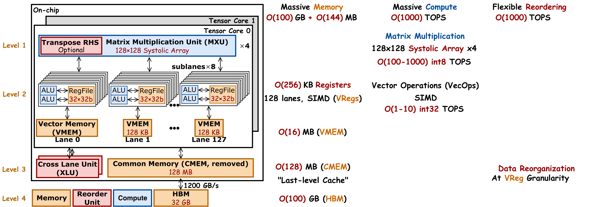
Memory
Different generations of TPU have hundreds of GB HBM. Hundreds of MBs last-level cache. This memory is shared by one or two tensor cores, and therefore we call it common memory, or CMEM. Each tensor core has tens of MB of local scratch pad. They are organized into a vector of 128 lanes. So we call them Vector MEM, or VMEM. Within each lane, there are eight sublanes. Each sublane has a register file with 32 copies of 32-bit registers. This gives 1024 local register files for each tensor core. In total hundreds of KB local registers. This in total gives hundreds of GB off-chip memory and hundreds of MB on-chip memory.
Compute
Each sublane has two local ALUs. In total, each tensor core has 2048 ALUs. These ALUs are designed to process vectorized operations (VecOps), and so we call it a VPU. All these 2048 ALUs in VPU work in lock step. And we control them using single instruction, multiple data, or SIMD instructions. This gives 1 to 10 TOPs of 32-bit VecOps. Each tensor core also has four dedicated compute engines for matrix multiplication, called MXU. Each MXU is a 128×128 systolic array, which is designed to process large matrix multiplication. This gives 100 to 1000 TOPs for 8-bit matrix multiplication. The throughput for low-precision matrix multiplication is about 100× higher than high-precision vectorized operations. Therefore, we want to use MXU as much as possible for higher performance.
Bandwidth
TPU has massive on-chip bandwidth for fast on-chip data reordering. It also has a dedicated hardware called "cross lane unit" (XLU). XLU supports on-chip data reorganization at VReg granularity.
Compute and Memory Gap of Using TPUs for HE Acceleration
If we put the workload and computation together, then there are clearly compute and memory gaps between what HE requires and what TPUs natively provide.
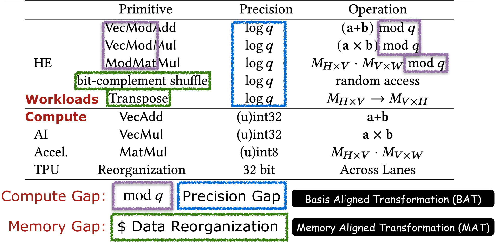
From the perspective of compute:
- Modular Reduction Support: HE requires modular reduction but TPU does not have a dedicated hardware acceleration engine for it.
- Insufficient precision: Even with Residue Number System (RNS), HE still requires precision of 28–59 bit moduli, which is higher than 32-bit vectorized modular arithmetic and 8-bit matrix multiplication supported by AI ASICs.
From the perspective of memory:
- Data reorganization: Standard NTT algorithms require fine-grained data shuffles and transpose a large-scale tensor with tens of thousands degrees, which are expensive on TPU's memory subsystem. Further, TPU's cross lane unit (XLU) is only optimized for coarse-grained 128×8 VReg-based data manipulation. Finer-grained data manipulation will underutilize TPU's VReg, introducing extra redundancy. Therefore, we want to eliminate these explicit memory reorganizations.
The Key Insight: Static Scheduling Enables Compile-Time Transformation
HE operators have a unique property that distinguishes them from general-purpose computation: static scheduling of modular arithmetic with pre-known parameters. Polynomial degrees, moduli, NTT twiddle factors, and key-switching evaluation keys are all known at encryption parameter setup time—before any ciphertext is processed. Further, HE has a static computation graph. Both enable a significant portion of the modular arithmetic to be partially evaluated at compile time.
Specifically, CROSS (1) absorbs modular reduction constants and memory permutations into precomputed parameter matrices offline, and then (2) transforms the remaining computation to dense INT8 matrix multiplications and INT32 vectorized shift and addition—exactly what TPU MXUs, VPUs and XLU could execute at peak efficiency. This turns the TPU into a SotA throughput machine for HE, without any hardware modifications.
Design Overview
CROSS is a JAX-based compiler framework that transforms HE workloads into TPU-native operations. Rather than requiring years of ASIC design, CROSS provides an immediate, zero-hardware-cost path to SotA HE acceleration by leveraging existing Google TPUs.
To tackle this entire problem structurally, HE acceleration techniques, particularly for CKKS encryption, could be formally categorized into five distinct layers:
- Packing defines how data is organized within ciphertext slots. Specifically, a CKKS ciphertext operates like a vector of SIMD units, encoding multiple data per ciphertext and enforcing lock-step operator for all encoded data. Thus, operators in original applications initially designed for element-wise computations must be transformed into SIMD-compatible, HE-specific Privacy-Preserving Operators (PP-Ops).
- Mapping translates PP-Ops into sequences of fundamental HE operators. Optimal mapping seeks maximum arithmetic intensity, data reuse, and parallelism while minimizing computational and memory overhead to reduce latency.
- Scheduling determines how HE kernels are scheduled for each HE operator (e.g., addition, multiplication, rotation, rescale, bootstrapping).
- Decomposing specifies arithmetic and memory operations on individual ciphertexts for HE kernels.
- Binding: Arithmetic and memory operations are translated into hardware-specific programming interfaces (e.g. JAX for TPU), or low-level hardware ISAs (e.g. SIMD ISA for TPU).
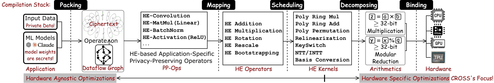
The CROSS library tackles Scheduling, Decomposing and Binding, and provides library HE operators, HE Kernels and Arithmetics functions:
- HE Operators: HE-Multiplication (with relinearization), HE-Rotation (with key switching), and HE-Rescale.
- HE Kernels: NTT, inverse NTT, basis conversion, and modular arithmetic (Barrett reduction, Montgomery reduction, Shoup's reduction and BAT lazy reduction), all operating on BAT/MAT-transformed parameters.
- Arithmetics: Basis Aligned Transformation (BAT) and Memory Aligned Transformation (MAT) restructure HE computations offline to match TPU hardware primitives.
The core of CROSS lies at two transformations BAT and MAT to tackle compute gap and memory gap, respectively.
CROSS is integrated into Google's jaxite library for CKKS TPU acceleration and is verified for bit-exact correctness against OpenFHE.
Basis Aligned Transformation (BAT)
BAT is the core compile-time transformation that bridges the compute gap (modular reduction and high precision requirement). BAT converts high-precision modular matrix-vector products into low-precision (INT8) matrix multiplications and (INT32) vectorized addition, unlocking the TPU MXU.
Problem
HE requires high-precision modular vectorized multiplication (z=a×b%q) and high-precision modular matrix multiplication (o=W×v%q). Both require high precision and modular reduction.
Both need the same fundamental kernel, i.e., high-precision scalar multiplication. Therefore, we formulate the problem as "how to offload the high-precision parts and modular reduction part of high-precision scalar multiplication to compile time, and then transform the remaining operations into kernels that TPUs are good at".
Approach
Overview
Let's take a single pair of high-precision scalar multiplication z=a0×b0%q. BAT exploits the fact that a0 and q are pre-known at parameter setup time, and it could partially compute the z=a0×b0%q, only leaving the 8-bit matrix multiplication and 32-bit vectorized shift and addition in the runtime.
Offline (compile-time): The key insight is that the modular reduction of high-order byte contributions—the expensive part—is absorbed into the weight matrix itself. This moves the "temporary result computation to offline."
Online (runtime): Each 32-bit input element is bitcast to 4 uint8 bytes. The modular matrix-vector product becomes four INT8 matrix multiplications (one per byte position), accumulated with byte-aligned shifts. Each INT8 MatMul maps directly to a single TPU MXU operation. A final Barrett reduction brings the accumulated result back to the modular domain.
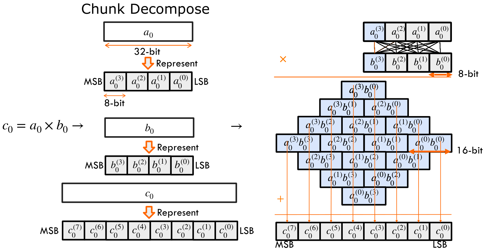
Lower Scalar Multiplication as Low-Precision Chunk-wise Multiplication
For multiplying two 32-bit values: each 32-bit input can be decomposed into four 8-bit chunks. We use superscripts to mark chunk indices, e.g. a(3) as the most significant byte. The product is a 64-bit result, which we eventually reduce back to 32 bits through modular reduction. And such temporal 64-bit results would be decomposed into eight 8-bit chunks.
Once decomposed, the original 32-bit multiplication turns into an all-to-all set of 8-bit multiplications across these chunks. It takes 16 multiplications to generate chunk-wise products and then accumulate them back to c. From the rightmost to the leftmost, the basis keeps increasing.
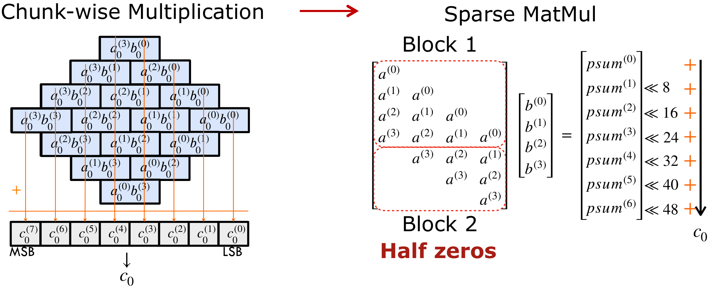
The state-of-the-art GPU library schedules chunk-wise multiplications as a sparse matrix multiplication. Each row of the left matrix corresponds to a partial sum in the final result. These partial sums are then left-shifted and accumulated to form c. Now, notice the structure: the left matrix is a Toeplitz matrix of a. But half of its entries are zeros—which means half of the computations are redundant.
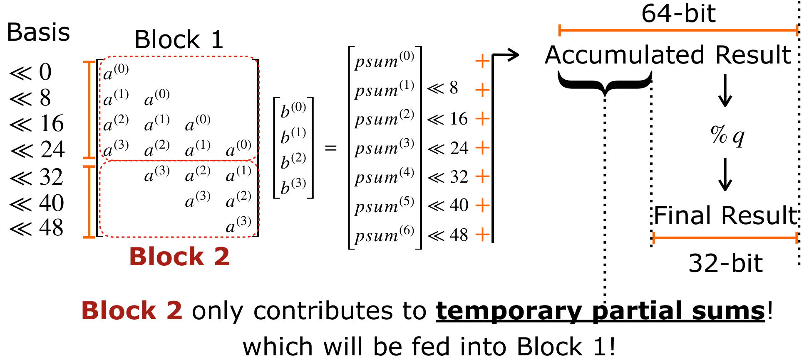
To reduce such redundancy, we propose Basis Aligned Transformation (BAT). BAT eliminates the redundancy in sparse MatMul and converts it into a smaller dense MatMul. The idea behind BAT comes from a simple observation: Block 2 in the multiplication only contributes to temporary partial sums. These generated partial sums are left shifted and accumulated into a 64-bit result, which is later reduced modulo q back to 32 bits. That means the upper 32-bit part is only temporary. In other words, Block 2 in the left matrix contributes only to this temporary part, which will eventually feed into Block 1.
Therefore, BAT lowers the Basis of Block 2 and fuses them into Block 1 offline. We group a(3) << 48 together, then insert a modulo q operation and compute it offline. The result is smaller than q, and less than 32 bits. Let's call this reduced value r. Finally, r can be decomposed into four 8-bit chunks, with its basis aligned back within 32 bits.
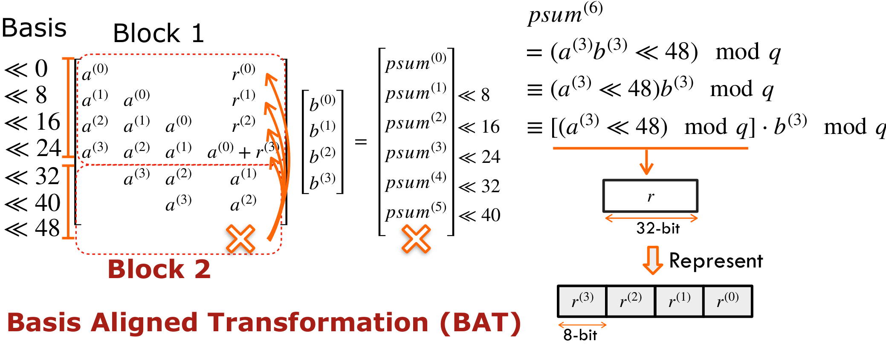
We could eliminate a(3) in Block 2 and add the decomposed chunks of r into Block 1. This effectively aligns the basis of values in Block 2 below 32 bits, and therefore we call it as Basis Aligned Transformation. Further, we could repeatedly apply BAT to all elements in Block 2 to fuse them back to Block 1 offline. This generates a smaller dense matrix multiplication, giving 2× speedup.
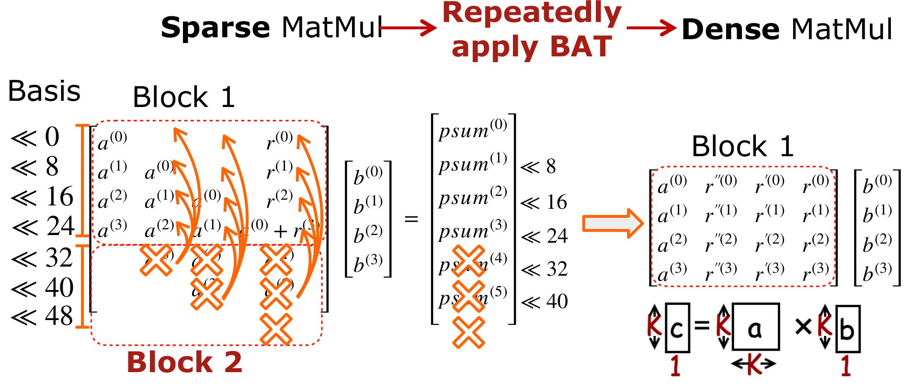
This lowers one 32-bit scalar multiplication into a low-precision INT8 K×K×1 matrix vector multiplication.
Lazy Modular Reduction in BAT
By utilizing Lazy Reduction, we can significantly lower the computational cost of maintaining bit-precision. After the initial operation c0=BAT(a0)×b0, we must perform a modular reduction to transform the temporal result c0 into the final value z0 = c0 mod q.
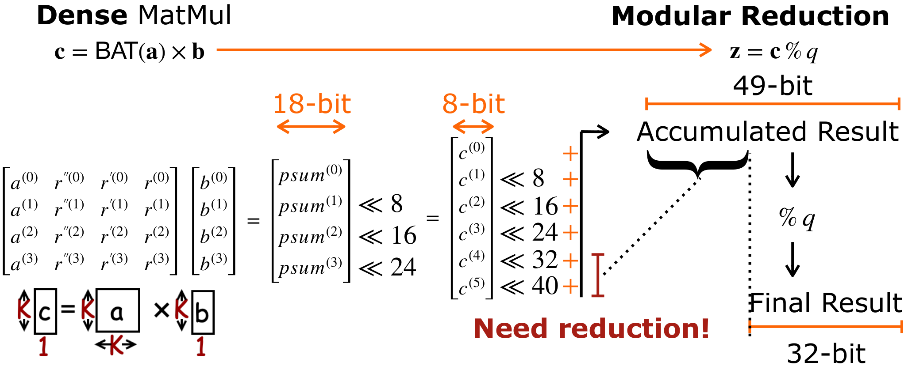
A K×K×1 matrix-vector multiplication involving K bytes produces partial sums. Traditionally, these are shifted by their corresponding bases, accumulated into a high-precision result (e.g., 49-bit), and then subjected to a Full Modular Reduction to ensure the result is ≤q. However, full reduction is computationally expensive.
Instead of forcing every intermediate step to be ≤q, we propose BAT Lazy Reduction. This approach allows intermediate values to exceed q as long as they stay within a 32-bit machine word, and then use BAT to offload the runtime modulo q to compile time. This eliminates the need for frequent, expensive division or complex modulo operations.
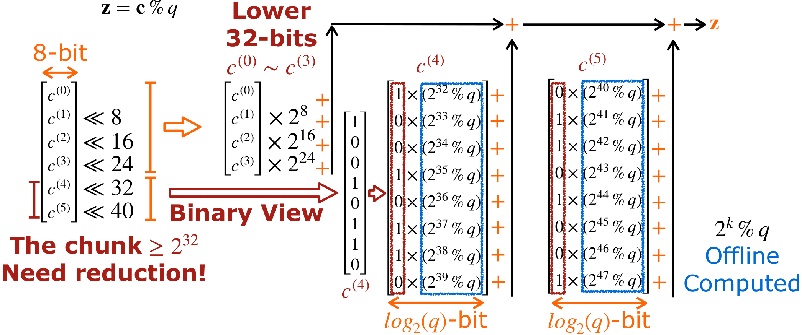
Bit-Level Optimization
Our goal is to bring high-precision bits down to a 32-bit boundary rather than strictly ≤q. We treat the lower and upper bytes differently:
- Lower 32 bits (c(0)–c(3)): These bytes are kept intact. They are shifted by their respective bases and merged directly.
- High-Overflow bits (c(4)–c(5)): These bytes exceed the 32-bit threshold and require explicit reduction.
For c(4) and c(5), we represent each with their binary representation and then apply BAT to preprocess (basis mod q) as log2 q-bit coefficient in compile time:
- Binary View: For c(4) and c(5) that overflow 32 bits, we first represent both into binary form. Then each bit needs to be shifted by respective basis and then modulo q, i.e. (× 2k mod q).
- BAT Preprocessing: The value of 2k and q are both known ahead of program execution. Therefore, we could preprocess (2k mod q) in compile time, and then store the results as log2 q-bit coefficients.
- Runtime Accumulation: At runtime, we simply sum the pre-computed coefficients for every bit in c(4) and c(5) that is set to 1.
- Result: This transforms a complex modular reduction into a simple sequence of shifts and additions.
Precision & Overflow Safety
Lazy reduction of c(4) and c(5) involves accumulating up to 16 pre-computed log2 q-bit values. This adds at most log2(16) = 4 bits of precision. Therefore, the upper threshold for any intermediate value is (log2 q + 4) bits. To ensure zero overflow on a standard 32-bit machine word:
- Recommended: log2 q ≤ 28 bits.
- Experimental: Testing confirms that log2 q = 29 bits also functions correctly without overflow in standard workloads.
Why BAT Works
Because the moduli are static, the expensive part of modular reduction—computing how each byte position wraps around mod q—is done offline in compile time. The online path sees only dense INT8 MatMul that TPU's MXU excels at, and INT32 VecAdd and VecShift that TPU's VPU excels at. This effectively utilizes the TPU's high-throughput compute engine to accelerate the HE kernels, inheriting the high throughput for HE. BAT removes all redundant zero entries from the prior SotA GPU's sparse-matrix approach, achieving up to 2× speedup.
Example: Applying BAT for High-Precision Modular Matrix Multiplication
Without CROSS, on TPU, both high-precision modular arithmetic runs on the VPU at ~O(10) TOPS. The MXU provides ~O(100) TOPS but only for INT8 operations—a 100× throughput gap. BAT lowers a high-precision MatModMul into a low-precision MatModMul: each H×V×W high-precision MatMul becomes KH×KV×W INT8 MatMuls, directly executable on TPU MXU.
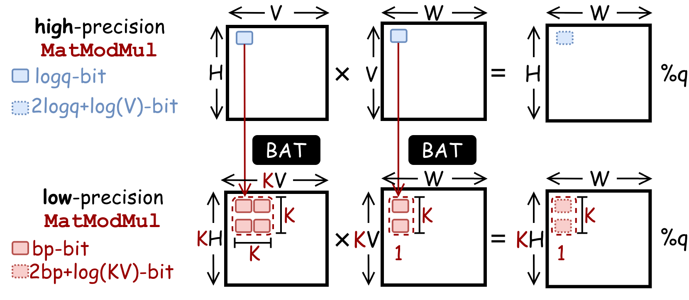
Code Reference: See the function basis_aligned_transformation in the file
CROSS/jaxite_word/ntt_mm.py.
Memory Aligned Transformation (MAT)
MAT is the second compile-time transformation that bridges the data reorganization gap. MAT eliminates runtime data permutations (transpose and shuffling) by embedding reordering into pre-known parameter matrices offline.
Problem
In a standard matrix multiplication workflow, a parameter matrix P is multiplied with an input vector to generate a temporal result, which must then be transposed or shuffled. This explicit reordering has significant memory overhead on TPU.
Approach
Example 1: Transposed Matrix Multiplication
A pre-known parameter matrix P will be multiplied with the input matrix to generate a temporal result, which is further transposed to obtain the final results. To eliminate this overhead, Memory Aligned Transformation (MAT) embeds data transposition into computation. By leveraging linear algebra properties, CROSS swaps the order of parameter P and input matrix, and then transposes both of them offline. This multiplication directly generates the result in the expected order, completely removing the need for an explicit transposition.
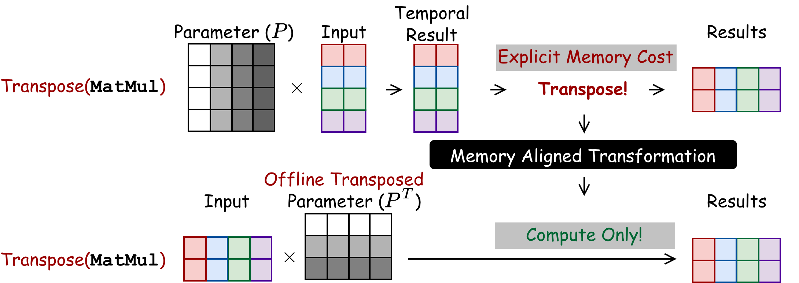
Example 2: Shuffled Matrix Vector Multiplication
In this example, you multiply first and shuffle later, which has explicit shuffling overhead. Because parameters are pre-known, MAT shuffles the rows of the parameter matrix offline so that the matrix multiplication directly produces the result in the correct order—no runtime shuffling is needed.
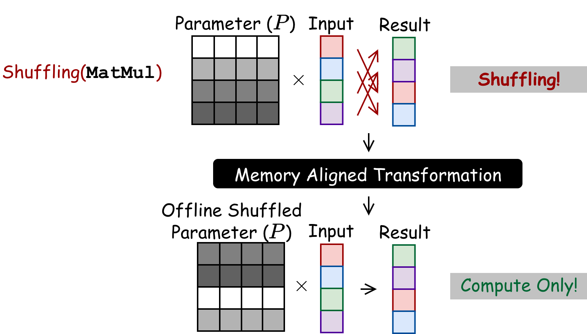
For the NTT, MAT applies bit-reversal permutations to twiddle factor matrix rows and columns offline. For HE-Rotation, MAT decomposes a subset pattern of 1D automorphism permutation (which would require an O(N) gather) into separate row and column permutations on the 2D matrix layout, reducing memory footprint to O(√N).
Example: Applying MAT for NTT
The NTT is the most performance-critical kernel in the CKKS scheme. CROSS applies MAT to optimize a 4-step algorithm into a 3-step layout invariant NTT algorithm.
Baseline 4-Step NTT Algorithm
The coefficients of the input polynomial of length N are reshaped into an R×C matrix where N = R×C, which will then go through 4 consecutive steps:
- Step 1: Each column of the matrix needs to go through an NTT of size R.
- Step 2: The result is then transposed from R×C into C×R.
- Step 3: It goes through element-wise multiplication, to generate this C×R matrix. Now each row in the original matrix becomes a column here.
- Step 4: We need to perform row-wise NTT, which is also computed by multiplying the coefficient matrix with twiddle factors.
- Finally, the result of this step needs to be bit-reversed into the final results.
This incurs explicit transpose and bit-reverse permutation costs.
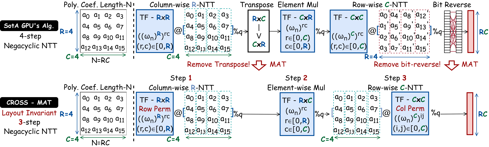
Optimized 3-Step Layout-Invariant NTT
In order to remove the explicit data layout reordering:
- To remove the transpose, MAT transposes the parameters of all following steps, such that data are stored consistently in the original row-major layout.
- To remove the bit-reverse, both two parameter matrices in step 1 and step 3 are permuted such that the computation directly generates results in the expected order.
This completely gets rid of the explicit memory overhead, producing a layout-invariant 3-step NTT algorithm:
- Step 1 (Column NTT): Multiply an R×R twiddle factor matrix against each column group.
- Step 2 (Elementwise multiply): Pointwise modular multiplication by C×R cross-term twiddle factors.
- Step 3 (Row NTT): Multiply a C×C twiddle factor matrix against each row group.
Code Reference: See the function memory_aligned_transformation in the file
CROSS/jaxite_word/ntt_mm.py.
Modular Reduction
CROSS supports four modular reduction strategies. The choice of strategy interacts with BAT compatibility:
- Barrett reduction (default): Division-free reduction using precomputed constants. Compatible with BAT. Used for all production paths.
- Montgomery reduction: Supported but not default—domain conversion overhead is not justified when BAT already eliminates the modular multiplication bottleneck.
- Shoup reduction: Supported for reference—fundamentally incompatible with BAT because Shoup requires a precomputed partner per operand, which conflicts with BAT's byte decomposition.
- BAT-lazy reduction: Fuses the reduction into the BAT computation as a small matrix-vector product, reducing the number of separate reduction passes.
Code Reference: See the classes MontgomeryContext,
BarrettContext, ShoupContext, and BATLazyContext in the file
CROSS/jaxite_word/finite_field.py. The usage of different modular reduction algorithms can
be found in CROSS/jaxite_word/finite_field_test.py.
HE Operators
CROSS implements the CKKS operators (HE Multiplication, HE Rotation, HE Rescale, HE Addition), and provides performance estimation for the bootstrapping operator (HE Bootstrapping). CROSS adopts the HYBRID key-switching variant. Each operator composes multiple HE kernels, including NTT, basis conversion, and modular arithmetic kernels.
HE-Multiplication
CKKS multiplication takes two ciphertexts and produces one result through five stages: rescale → polynomial multiplication → key switch → approximate modulus down → addition. The key-switching step dominates latency and involves HYBRID decomposition, basis conversion from Q-basis to the extended Q∪P-basis, NTT, and evaluation key multiplication.
HE multiplication is not a single step; it involves a sequence of stages to maintain the ciphertext's integrity and manage noise:
- Rescale: Adjusts the scale of the fixed-point numbers after multiplication.
- Polynomial Multiplication: Multiplies the polynomials, which temporarily increases the number of elements (from 2 elements to 3).
- Key Switch (Relinearization): Converts the 3-element result back into a standard 2-element ciphertext.
- Basis Conversion (Modulus Down): Lowers the modulus to manage noise growth.
- Addition.
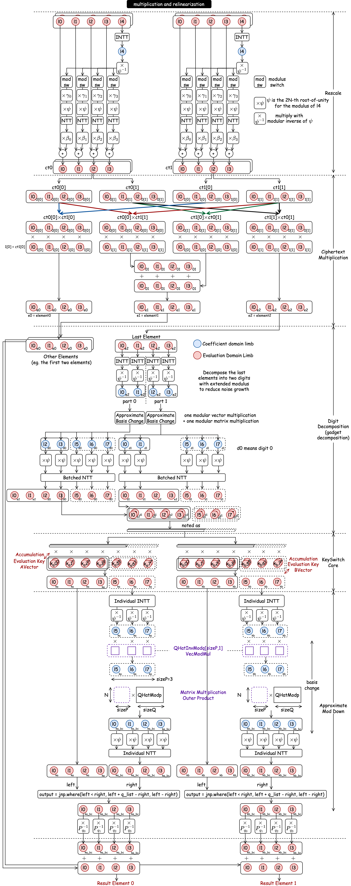
HE-Rotation
Rotation permutes encrypted slot values via automorphism. The pipeline mirrors multiplication's key-switching stage: INTT → basis conversion → NTT → evaluation key multiplication → approximate modulus down → automorphism permutation. MAT's 2D decomposition of the automorphism permutation is applied in the final step.
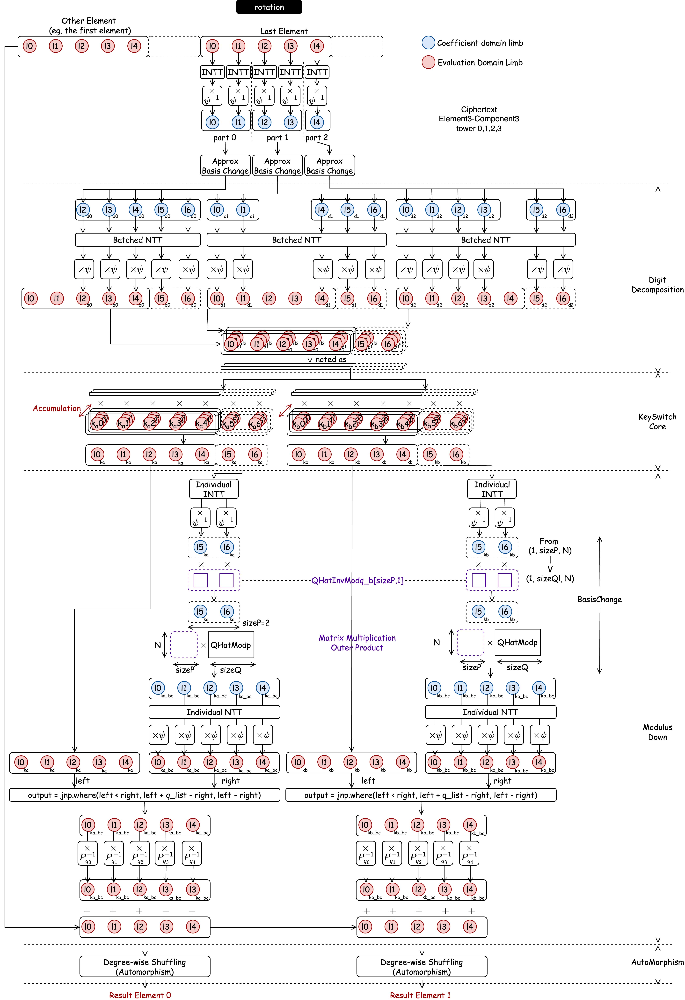
HE-Rescale
Rescaling drops the last RNS modulus to reduce the ciphertext level after multiplication, composing INTT, centered lift, scaling, and NTT on the extracted limb.
Basis Conversion
Basis conversion (BConv) changes a polynomial's RNS representation between moduli sets. The cross-basis linear combination is a matrix-vector product, which BAT transforms into INT8 matmuls—the second major application of BAT beyond NTT.
The conversion is broken into two steps:
- Step 1: bn,i = [ an,i · q̂i-1 ]qi for 0 ≤ i < L and 0 ≤ n < N. This invokes L independent instances of N-length Vectorized Modular Multiplication.
- Step 2: cn,j = (Σi=0L-1 bn,i · [qi*]pj) mod pj. This invokes one Modular Matrix Multiplication: MN×L' = MN×L · ML×L'.
Citation
If you find this tutorial helpful, feel free to:
- Star CROSS repo at https://github.com/EfficientPPML/CROSS
- Cite our paper with biblatex below:
@inproceedings{tong2025CROSS,
author = {Jianming Tong and Tianhao Huang and Jingtian Dang and Leo de Castro and Anirudh Itagi and Anupam
Golder and Asra Ali and Jevin Jiang and Jeremy Kun and Arvind and G. Edward Suh and Tushar Krishna},
title = {Leveraging ASIC AI Chips for Homomorphic Encryption},
year = {2026},
publisher = {2026 IEEE International Symposium on High Performance Computer Architecture (HPCA)},
address = {Australia},
keywords = {AI ASICs, TPU, Fully Homomorphic Encryption},
location = {Australia},
series = {HPCA'26} }